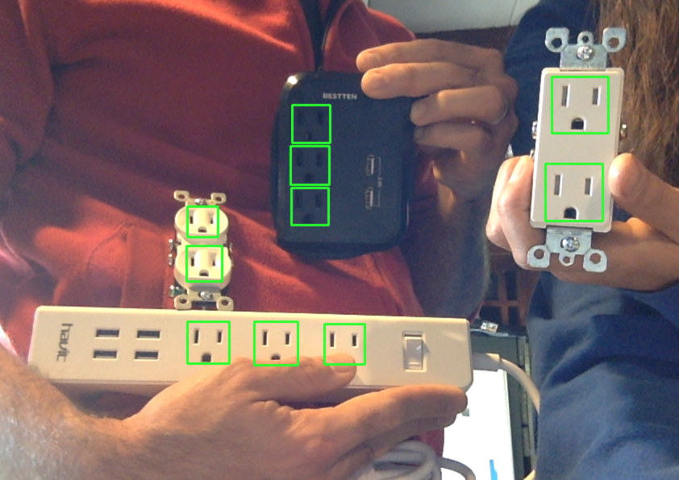

OpenCV-object-detection-tutorial
How to Detect Objects Using OpenCV & a Negative Image Set
This project is maintained by JohnAllen
Object Detection Using OpenCV
Recently I wanted to create object detection capabilities for a robot I am working on that will detect electrical outlets and plug itself in. The robot needs to perform with a high level of accuracy and success, at least 99% or more each step of the way. One thing to remember about robot operations is that if each step required to complete a goal succeeds only 99% of the time and there are multiple processes, the ultimate-goal success rate will be .99^n, which could result in ultimate-goal completion rate that is significantly less than 99%. So each step of the way must be nearly >99% successful. Object detection is the first step in many robotic operations and is a step that subsequent steps depend on.
Because the performance of the object detection directly affects the performance of the robots using it, I chose to take the time to understand how OpenCV’s object detection works and how to optimize its performance. I also found the available documentation, tutorials incomplete or outdated; and a few SO questions similar to mine remain unanswered. So it seemed that taking the time to write a detailed reference with my findings might benefit others.
Here's a great example of how well OpenCV's object detection can work when you get it right!!

In this post, I use *nix programs; I apologize to Windows users in advance.
I want to point out that installing OpenCV for certain platforms can be complicated and slow. I suggest reading this post thoroughly, collect your images and then install OpenCV on a remote server. Installation will be much easier if you use a remote server running Ubuntu and you can rent a server with much more CPU than your laptop will have to complete the training much faster.
As I began to learn about OpenCV’s object detection capabilities, I had numerous questions:
- What is going on behind the scenes? How does the Viola-Jones algorithm work?
- How many positive and negative images do I need?
- Should I provide multiple positive images or will using OpenCV’s
create_samplesutility to generate distorted versions of a single positive image suffice? - Does it matter what the negative images contain so long as they don’t contain the object I want to detect?
- For positive images, do the objects need to fill the entire image?
- What is the easiest way to create positive images? How can I acquire a negative image set?
- Do the positive and negative images need to be the same size?
- Which options do I want to pass to each of the OpenCV programs?
- How can I quickly test the performance of my classifier and cascade file?
- How could I train my classifier on a remote host so I don’t have to use my machine to train for multiple days or weeks?
- Does it matter if I use Haar-features or can I use linear binary patterns (LBP) since the LBP approach is faster?
Viola-Jones Algorithm - Features, Integral Images and Rectangular Boxes
First off, let’s briefly delve into how the Viola-Jones algorithm works and try and understand what it’s doing. If one reads the abstract to the original Viola-Jones paper, we find some new but important terms: integral image, cascade, classifier, feature, etc. Let’s take a minute to learn about them.
How does this software use rectangular boxes to detect objects? What the are integral images?
Integral images and rectangular boxes are the building blocks that the Viola-Jones algorithm uses to detect features. An object’s features are seen by the computer as differences in pixel intensities between different parts of images. The algorithm doesn’t care what color our objects and images are, just the relative darkness between parts of the images.
The original paper uses the most obvious feature of human faces, the difference in darkness between the human eye and cheek regions. The training program looks at all combinations of adjacent rectangles as sub-images within each training image and compares the difference between adjacent rectangles.
A simplification that could help us understand how object features are detected is to reduce the image to how the computer sees it. Computers don’t see images, they see numbers. In this case, the algorithm determines the darkness of adjacent rectangles and compares those. Individual features are differences in the darkness of adjacent rectangles.
Steps Required to Create an Object Detection Cascade File
Below is a brief overview of the steps required to generate a cascade file for object detection. Don’t worry about the details, now, we'll walk through each step below.
- Install OpenCV
- Create a directory that will house your project and its images
- Acquire or develop positive images
- Create an annotation file with the paths to your objects in the positive images
- Create a
.vecfile that contains images of your objects in binary format using the annotation file above - Develop and acquire negative images that do not contain the object you wish to detect
- Train the cascade
- Test your cascade.xml file
Installing OpenCV on Linux/Ubuntu
I mentioned that the training can take a long time. It can actually take weeks, I've read. I strongly recommend you use a remote server to train your cascade. Here are two reason why: one, it will speed up the training immensely (mine took only 18 minutes); and two, installing OpenCV on Ubuntu is way faster than compiling from source on a Mac. There are no pre-compiled binaries available for OS X.
I used an 8-core Digital Ocean server to train mine. This server cost about $5 per day. You should only need one for a few hours, or perhaps a few days if you struggle to get the training right. I believe when you sign up for Digital Ocean that you get $10 in credit too, so you can probably do this for free.
Tip: It’s not super difficult to find $10 coupons for Digital Ocean if you look around a bit. Another benefit of using Digital Ocean for this is that your local machine mustn’t be devoted to the training - a remote server will keep training even if you accidentally close your machine.
How to Rent a Digital Ocean server
- Create a droplet on Digital Ocean
- Choose Ubuntu 14.04
- Choose a region (region and latency don’t matter here since we only need to download our final cascade.xml file)
- Ignore the additional options
- For the SSH key, if you know what this and already have a key on your machine, you can add your public key to Digital Ocean, which is what I recommend. Otherwise please this brief tutorial tutorial to setup SSH keys.
- Once you have the server up and running and you're logged in, see this tutorial to install OpenCV.
How to Develop a Positive Image Set
There are a few ways to develop positives.
- Take pictures of the actual objects you intend to detect. You will have to do this if you're detecting something unique which is not easily google-able.
- Google your object and save those images.
I used a combination of these two approaches.
Taking Your Own Photos
Here are a few things to remember when taking pictures of your object(s). Probably the most important: you can take multiple images of the same thing that count as multiple positives. You can slightly (but not too much) tilt and rotate your object (approximately 10-20º). If you have multiple instances of the object, like shoes, take pictures of all of them, positioned in the same way (toes facing left or right).
Googling for Images of Your Object
I found different color outlets when googling; also different backgrounds and angles. When googling for your object, you can specify the size of the images Google returns, too.
To set the size once you have clicked "Images",
- Click “Search Tools”
- Then "Size"
- Click “Size”
- Click “Exactly”
- Enter a size. I used 256x256 pixels. I think this is a reasonable balance between maintaining resolution and using small enough images so as to minimize training time. I tried smaller images, 80x80 pixels which resulted in tons of false positives.
I recommend using at least 100-200 positives to start off. You may get a decent result with fewer, some have. I used ~380 for my final, nearly perfect cascade file, with zero false positives that more than flickered on the screen.
Creating an Annotations File with OpenCV’s Annotation Tool
Once you have your positive images, you should make an annotations file. I say "should" because I think this is an important step. I didn't generate a working cascade.xml file until I used this tool to create an annotations file. At first it seems like this tool will take a long time to make such a file, but it doesn’t. I suggest starting out by using this tool and not trying to train your cascade without it.
Here’s how it works:
Along with OpenCV's traincascade and createsamples applications, when you type opencv_[tab] in your terminal (once you have OpenCV installed), you will find another tool:
opencv_annotation
The opencv_annotation tool helps you to quickly generate an annotation file with paths to your positive images and the location and size of the objects within those positive images. Note that the starting pixel is the top-left corner of the rectangle that contains your object. When done, the file will look something like this:

The “2” after the file path is the number of positives in each image (lots of mine were two because outlets come in pairs). Then we have the top left hand corner starting pixel of our object. Next are the sizes of each object within the image.
So in the first line in the annotations image above, the “230 169” is the pixel at the top left corner in GOPR4620.JPG where an outlet starts. It is 33x40 pixels. You get the point.
The annotation tool writes the paths that you outline in each image for you which saves us a ton of time.
Here’s the command that I used to create the annotations file.
opencv_annotation -images . -annotations annotations.txt
I had one problem with this tool that will hopefully not happen to you or be fixed. The annotation tool would not write to the file when “n” was pressed after outlining an object. It would only write to the file when all of the images in the directory had been processed.
As a workaround, I moved my images into a series of directories and added each directory’s annotations file to the main one using a command like the following, which takes the contents of one file and adds those to another.
cat ./sub-dir/annotations.txt >> ./main-annotations.txt
Be sure to use two arrows, like “>>” or else cat will overwrite your annotations file and you’ll have to start over!
After you create this annotations file you can use the opencv_createsamples tool to create a .vec file but with more varied positive images.
Ideal Positive and Negative Images
Ideally your positive and negative images will contain the actual objects you’re trying to detect in their natural environment.
How Can I Develop a Negative Image Set?
There are a few ways to generate negative images. One thing to remember is that you will get the best results when using negatives from the environment you intend to use your cascade file in.
In this post's repository is a directory with a few tarballs that contain a total of 3,100 negatives. Note that you will need to scroll through each one to ensure they don't contain you object.
Here's another way to develop images using downloaded videos and grabbing frames.
- Identify the environment your object detection will be working in: warehouse, home, office, outside? Find a Youtube.com video that contains your environment. This should be really easy, Youtube has millions if not billions of videos.
- Scan the video to make sure it doesn’t contain your desired object. This may seem like it will take a long time to do. It doesn’t. Just start the video and click right every few seconds through it. You’ll be done in no time.
- Find a site that will enable you to download the Youtube video. This should be easy. I will leave you to do that yourself.
- Download that video to a project directory. I downloaded it to a negatives directory.
- Grab frames from the video. This will enable you to create hundreds or thousands of negative images in a few minutes. I used
ffmpeg. You can decide what percent of the video’s frames you would like to keep depending on how many negatives you think you need. - Repeat this a few times until you have thousands of negatives. Remember, the more the better. I didn’t start getting solid detection results until I used ~3,500 negatives.
Important Note
If you use this frame-grabbing approach, make sure to only get one out of every few dozen frames, unless your video is really moving around the environment. Most videos show the same view for at least a few seconds, so ensure that your negatives generated using this approach are different.
Getting your Image Sets to the Remote Server
Here are a couple of commands you can use to easily copy your positive and negative images to the remote server.
First, I suggest creating a tarball for each directory of images. This will speed up and simplify the transfer process.
While in your image directories do something like this:
tar -cvzf positives.tar.gz /path/to/positives-folder/*.jpg
tar -cvzf negatives.tar.gz /path/to/negatives-folder/*.jpg
These will each create a single file that contains your positive and negative images (with only the file extension you specify at the end) in the path you specified as the last argument above.
Here’s the command to copy your tarball to your remote server. This sshs into your remote server and copies the file to the path you specify:
scp positives.tar.gz root@[your-remote-ip]:/remote-project-dir/positive-image-dir
Don’t forget the “:” in the command above.
Once you've connected to your remote server, while in the appropriate directories, unzip your tarballs:
tar -xvf negatives.tar.gz
What Size Should My Images Be?
Some people use consistently sized images. I didn't. One important thing is that the sizes of your images need to be at least the size of the test, which defaults to 24x24 pixels.
According to an OpenCV author, Steven Puttemans, he never uses images with dimensions larger than 80px. I tried using 80px dimensions to speed things up. I got tons of false positives when doing so. But, I believe much of the image information was lost. I ended up using 256x256 pixel images. Smaller images may work, but 256 pixels square worked for me.
Note that if your images are small to begin with, increasing their size with mogrifywill not necessarily magically make them useful to the algorithm. I used this resize for images that started off larger than this, to increase the training speed.
What definitely does matter is the width -w and height -h arguments you pass to createsamples and traincascade . You will not be able to detect objects smaller than the dimensions you pass. They both default to 24x24.
opencv_createsamples Parameters
-
-num- How many samples to generate. This is based on how many objects are in your annotations file.
-
-vec object.vec- This is the filename that will be created that will contain your positives.
-
-info annotations.txt- Because I know you used the
annotationtool to create an annotations file.
- Because I know you used the
-
-bg bg.txt- This is the same file that holds the paths to your negative files.
createsamplesinserts your positives on your negatives.
- This is the same file that holds the paths to your negative files.
opencv_traincascade Parameters
-
-featureType- I would use LBP. It is faster than HAAR and can result in awesome object detection.
-
-wand-h- These specify the size of the window the algorithm will apply to the negatives. Do not specify these dimensions smaller than the object will appear in your working images.
-
-numPos- This one has some gotchas. You must actually pass a smaller number than the actual number of positives you have. You should use 85% as many positives as are actually in the
.vecfile*. This is because the training algorithm may discard some positives if some are too similar. If you usecreate_samplesto create a.vecfile, you are more likely to run into this problem. See this link for more of an explanation on why to use 85%
- This one has some gotchas. You must actually pass a smaller number than the actual number of positives you have. You should use 85% as many positives as are actually in the
- The memory options are supposed to help performance, but if you're using a remote server that's doing nothing else, I don't think they will speed things up.
-
-dataThe directory where OpenCV will store your cascade file and other related files. -
-bg bg.txtThis file contains the paths to your negatives. This file is pretty easy to create, just:ls *.jpg > bg.txt, while in your negatives directory. -
-acceptanceRatioBreakValueYou can use this to stop training at .00001 or 10e-5. -
-vecThis is the file output byopencv_createsamplesthat contains your positives.
Testing the Performance of Your Cascade File
To quickly test the performance of our cascade files, I have included a Python file that you can use to test your object detection locally with your computer's webcam. I'd like to credit Shantnu for originally posting a file very similar to the one included (with a version-error fix). This file will let you quickly test your cascade file. To test your cascade file, just run this command:
python webcam.py cascade.xml
What this file does is run OpenCV's detection in your computer's webcam, so this will only work if you have one of your objects handy. Sometimes images of objects on your phone or perhaps a printed image will work too.
Shantnu wrote a post about this file and explains what's going on inside. I recommend you take a minute to understand it, especially the
faces = faceCascade.detectMultiScale
part.
This is the core OpenCV function that actually uses our cascade files to detect our objects. The parameters are important here. Pay close attention to the scaleFactor, minNeighbors and minSize. minSize is self-explanatory. But the others aren't: scaleFactor scales your image down to enable your object to be detected. So scaleFactor = 1.1 shrinks your image by 10% - it zooms out, so to speak. minNeighbors is also very important. This SO answer definitely will do a better job explaining it than I will. So please check that out. The gist of it is that the higher minNeighbors is the higher the threshold for detecting objects is. If minNeighbors is too low, you will get too many false positives. This image shows you exactly what I'm talking about.

See how the actual faces have more squares? Even with a working cascade file we still have some false positives. The detectMultiScale function is sliding a square over our image source looking for parameters. Stronger matches (our actual objects) will have neighboring squares that also match. Those are the neighbors we're looking for.
Included with OpenCV are a few working cascade.xml files too. It's fun to run things just to see them work, so check those out.
How small can my objects be in the image and still be detected?
This depends on how small your samples are in your .vec file. I set mine at 20px x 20px because I want my robot to detect outlets from a long ways away. Your situation may be different.
General Tips
- Use an image format that doesn’t lose information compression as much. This will avoid compression artifacts. “This is especially the case when resizing your training data.” http://answers.opencv.org/question/39160/opencv_traincascade-parameters-explanation-image-sizes-etc/
- ImageMagick is your friend. ImageMagick, which is easily installable with the HomeBrew package manager makes some image operations super easy. Want to resize some large positive or negative images you took on your smartphone (modern iPhones are 12MP, 3000px * 4000px) which slows down the training algorithm without adding detection capabilities.
- There is not necessarily a correct ratio of positives to negatives. I have always seen people recommend one or more times as many negatives as positives. My ratio of negatives to positives was 10:1. That's what worked for my object but yours could be different.
- Train until you reach a ~10^-5 or ~.00001. Any more than this and you could be overfitting.
-
This could be really helpful: how do you get a
cascade.xmlfile whentraincascadewants to keep training past .00001? Simple: stop training with [ctl]-c. Then add the-numStages n-1parameter to thetraincascadecommand you were just using, where n is the number of the stage after it reached .00001. - Play with the parameters in
detectMultiScalea bit if you're getting too many false positives or otherwise poor detection results. Try reducing theminNeighorsto 3 or below to see if your cascade is detecting anything at all. - For the
bg.txtfile. It is common for this to have some extraneous files in it. So use this command so you only get yourjpgs in it.ls *.jpg > bg.txtcommand while in the negatives dir. Make sure you don't have anynewlinesorBOMs if you're on Windows. - Another common mistake that is potentially the fault of OpenCV is the absolute/relative path thing while running
traincascade. I ended up runningtraincascadewhile in my negatives folder which solved most of those problems. Just pass-vec ../some.vec-data ../data, etc.
Too many false alarms or false positives
Add more information! Increase your positive and negative image sets. Your classifier does not have enough information to correctly determine that your object is not in your test images. When I increased my positives and negatives when I had too many false positives, their number immediately declined and I started getting more stages.
Error Messages
Here are the likely causes of various error messages.
“Required leaf false alarm rate achieved. Branch training terminated“
The training algorithm can run out of information that will help it to add to its classifiers. If it has already gleaned as much as it can from the images, it simply stops. This is the output you will get when this happens.
This will happen earlier when you are using smaller image set sizes. If you only pass it a few dozen or hundred images it can only train a few stages. The more images you pass, the later you will run into this error and the better the cascade file will do to detect your objects.
But maybe your object is super static and it doesn’t take many positives to develop a good classifier. What you can do is to add the argument -numStages n-1, to opencv_traincascade where n is the stage number that gave you that error message. This will cause a cascade.xml file to be made that may work, or could at least provide you with some information about whether your arguments and images are on track.
Train dataset for temp stage can not be filled. Branch training terminated.
This is most common when you have not provided enough positives, which is really the most time-consuming aspect of training. Add more positives!
Overarching Takeaway
OpenCV is a mature, robust computer vision library. If you don't get solid results, you are either passing traincascade not enough images or the wrong images. Keep working at it until you get good detection. It may take a few tries like it did for me, but stick at it, it's magical when it works!